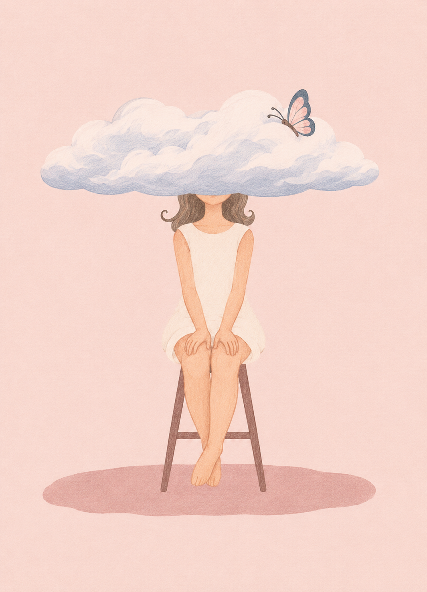
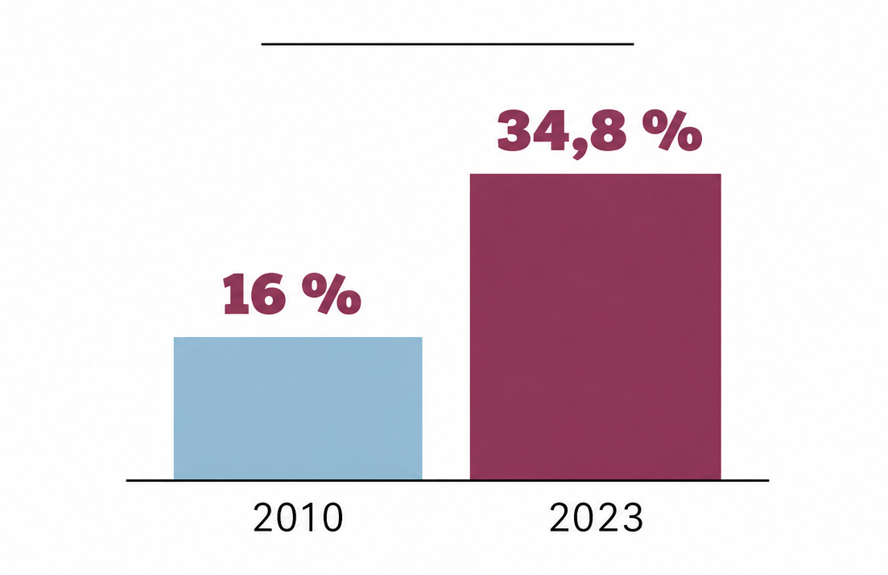
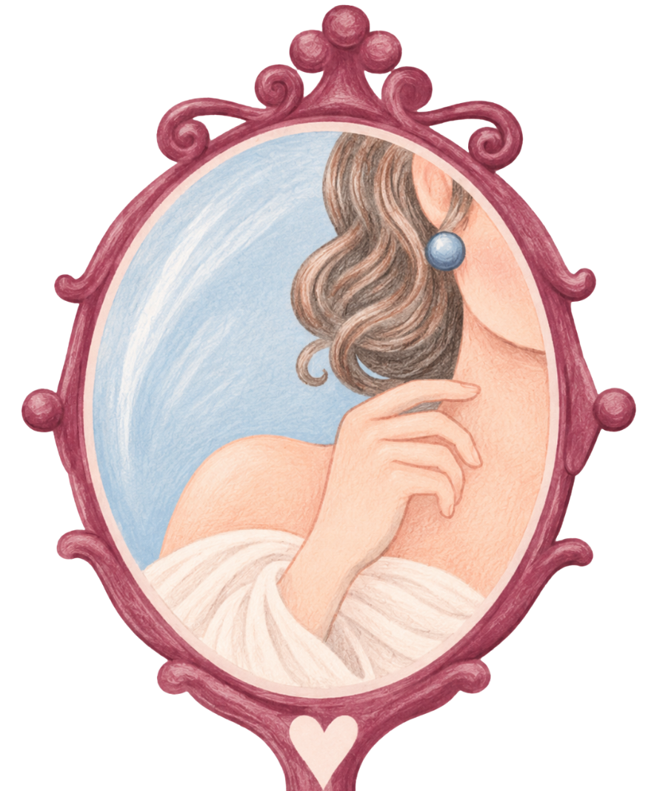

Anonym rådgivning
Du kan kontakte Kiss Your Brain og Livslinien anonymt
Et sted, hvor tanker og følelser får plads
Kiss Your Brain er et digitalt univers skabt med ét formål: at give mental sundhed mere plads i hverdagen.
Vi er her for dig, der nogle gange overtænker, tvivler på dig selv, føler dig udenfor eller bare har brug for at forstå dine tanker lidt bedre. Vi tror på, at mental sundhed ikke kun handler om de store udfordringer, men også om alle de små tanker og følelser, der kan fylde i hverdagen.
Kiss Your Brain ønsker at være et trygt og inspirerende sted, hvor du kan finde viden, genkendelse og nye perspektiver. Her er der plads til både de gode dage og dem, hvor alting føles lidt mere uoverskueligt.

Vi arbejder sammen med Livslinien . Her er nogle af retningslinjerne for vores rådgivning:
Du kan kontakte Kiss Your Brain og Livslinien anonymt
Vores telefon er åben 5 timer dagligt. Hver dag fra 10:00–15:00
Livslinien tilbyder også chat alle ugens dage
af danske kvinder mellem 16 og 24 år havde i 2023 en lav score på den mentale helbredsskala
Andelen af unge kvinder mellem 16 og 24 år,
som oplever udfordringer med deres mentale
helbred, er steget markant fra 2010 til 2023.
Grafen viser, at flere unge kvinder i dag
scorer lavt på den mentale helbredsskala
end tidligere. Bag tallene gemmer der sig unge kvinder,
som kan opleve stress, bekymringer, ensomhed eller følelsen af ikke at være gode nok.
For nogle fylder tankerne kun i perioder, mens de for andre bliver en del af hverdagen.
Det er vigtigt at huske, at mental sundhed ikke handler om altid at være glad eller have styr på det hele.

Kilde: Den Nationale Sundhedsprofil 2023, Statens Institut for Folkesundhed.
Det kan være en hjælp at spejle sig i andre og opdage, at man ikke er den eneste, der har det på en bestemt måde. Måske genkender du følelsen af at være udenfor, presset af hverdagens forventninger eller at være alt for kritisk over for dig selv. Uanset hvad der fylder, kan det give en følelse af forståelse og genkendelse at høre andres historier.
Derfor har vi skabt et univers, hvor du kan læse personlige fortællinger og se videoer fra mennesker, der deler deres oplevelser med blandt andet stress, usikkerhed, selvkritik, ensomhed og de tanker, der kan fylde i hverdagen.
Se flere historier